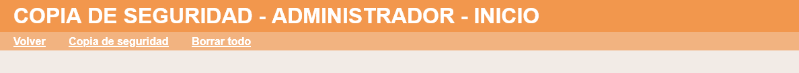
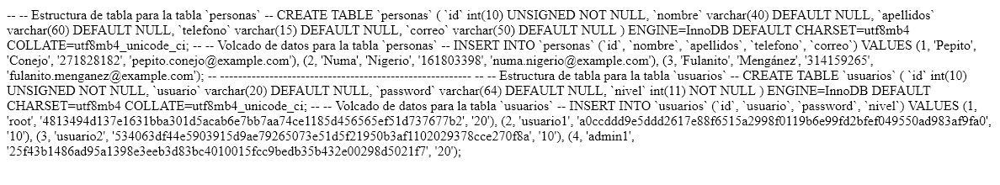

En este ejercicio se debe ampliar la aplicación proporcionada en la plantilla de manera que el administrador pueda hacer una copia de seguridad de la base de datos. La copia de seguridad no es completa, por simplicidad solo incluirá la creación de tablas y la creación de registros. La aplicación debe funcionar tanto en SQLite como en MySQL. Haga una captura de la pantalla en phpMyAdmin en la que se vea la base de datos de la aplicación y el contenido de la tabla de usuarios.
Menú administrador

Copia de seguridad

--
-- Estructura de tabla para la tabla `personas`
--
CREATE TABLE `personas` (
`id` int(10) UNSIGNED NOT NULL,
`nombre` varchar(40) DEFAULT NULL,
`apellidos` varchar(60) DEFAULT NULL,
`telefono` varchar(15) DEFAULT NULL,
`correo` varchar(50) DEFAULT NULL
) ENGINE=InnoDB DEFAULT CHARSET=utf8mb4 COLLATE=utf8mb4_unicode_ci;
--
-- Volcado de datos para la tabla `personas`
--
INSERT INTO `personas` (`id`, `nombre`, `apellidos`, `telefono`, `correo`) VALUES
(1, 'Pepito', 'Conejo', '271828182', 'pepito.conejo@example.com'),
(2, 'Numa', 'Nigerio', '161803398', 'numa.nigerio@example.com'),
(3, 'Fulanito', 'Mengánez', '314159265', 'fulanito.menganez@example.com');
-- --------------------------------------------------------
--
-- Estructura de tabla para la tabla `usuarios`
--
CREATE TABLE `usuarios` (
`id` int(10) UNSIGNED NOT NULL,
`usuario` varchar(20) DEFAULT NULL,
`password` varchar(64) DEFAULT NULL,
`nivel` int(11) NOT NULL
) ENGINE=InnoDB DEFAULT CHARSET=utf8mb4 COLLATE=utf8mb4_unicode_ci;
--
-- Volcado de datos para la tabla `usuarios`
--
INSERT INTO `usuarios` (`id`, `usuario`, `password`, `nivel`) VALUES
(1, 'root', '4813494d137e1631bba301d5acab6e7bb7aa74ce1185d456565ef51d737677b2', '20'),
(2, 'usuario1', 'a0ccddd9e5ddd2617e88f6515a2998f0119b6e99fd2bfef049550ad983af9fa0', '10'),
(3, 'usuario2', '534063df44e5903915d9ae79265073e51d5f21950b3af1102029378cce270f8a', '10'),
(4, 'admin1', '25f43b1486ad95a1398e3eeb3d83bc4010015fcc9bedb35b432e00298d5021f7', '20');